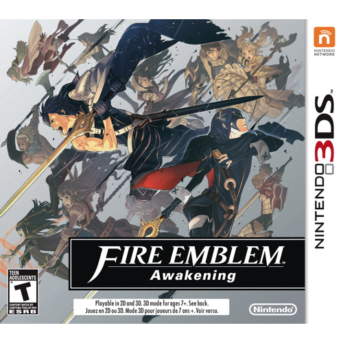
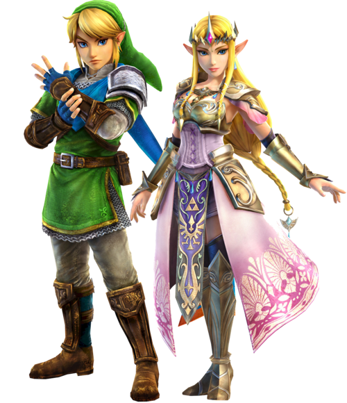

REVIEW: FIRE EMBLEM AWAKENING (NINTENDO 3DS)

There are so many great things about this game, I'm gonna have to break it down. Now, I'm a huge fan of RPGs. I love the customization, choices, and freedom that comes with them. And FEA (Fire Emblem Awakening) has all of that, plus an added bonus: strategy. In this Fire Emblem game, you get to create your own character, male or female. For once, the main character actually speaks (which is never the case in most games, I have no idea why). I thought it was cool. It puts you more into the game.
Another aspect of this game which makes it so great is all the character interactions. Your avatar also gets to have interactions, which is really neat. You can have the characters marry each other, and then they have children, which fight for you (they come from the future, I won't say more: SPOILERS). My avatar ended up marrying Chrom, who is one of the main characters. He's the blue haired guy you see there in the image to the left. This actually happened by accident. I didn't realize that in a certain chapter, whatever female character had the highest "support", which is how you build relationships between characters, would marry Chrom. Oops but, whatever.
Another thing I love about this game is classes. You can change classes with certain items, as well as upgrade classes. By going through classes, you obtain more skills and your characters become stronger, which is needed when progressing through the game. Once again, more freedom and control! Gotta love RPGs.
You'll spend so much time playing this game. I highly recommend it to any RPG or strategy lover.
REVIEW: HYRULE WARRIORS (NINTENDO WII U)

Alright, so I don't actually own this game, but my boyfriend does, and several hours were spent playing this game. This game is based off another, called "Dynasty Warriors". This game is very unlike classic Zelda games. You can play single player or co-op, which is great. You command a giant army, and you have to hash and slash through several enemies and various army captains as well. Basically you want to capture enemy keeps and protect your own keeps. It's insanely fun.
You can play as many characters from the franchise, including Link, Zelda, Sheik, Midna, Agitha, Impa, and many more. You can even play as the bad guys, such as Ganondorf and Zant. What is super cool about this game is the male to female ratio. Usually, there's way more males than females, but in this game, they females dominate, and kick some major butt. I love it.
The story part of this game is quite short, but it has a lot of replay value, which is nice. The focus of this game seems to be on Adventure Mode, which shows a grid in the style of the original Legend of Zelda game, pixelated and everything. Here you can complete challenges to unlock new characters, weapons, and more. These actually proved to be very difficult in some cases! It was refreshing, because I often find that video games have become a lot easier than they used to be.
Basically, if you love the franchise, try this game out.